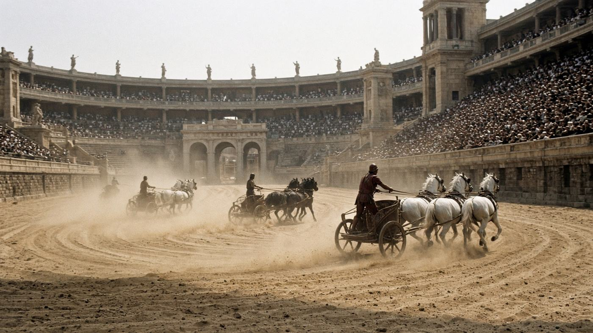
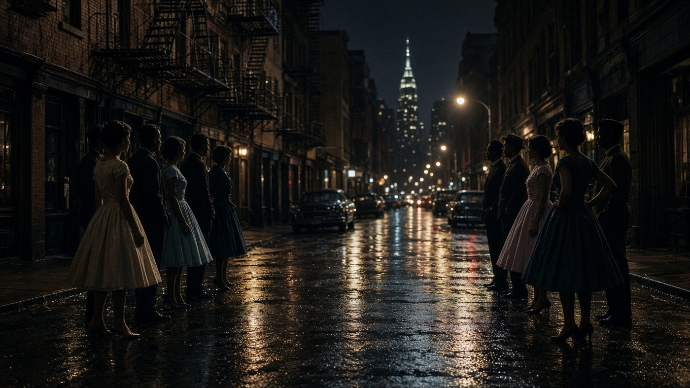
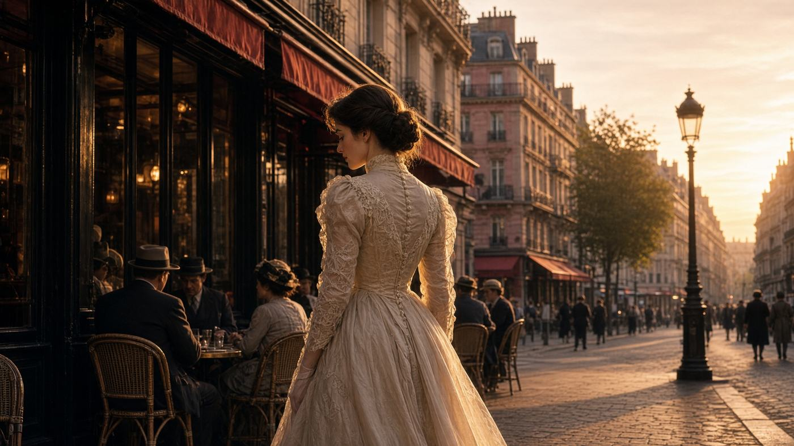

1939 — 2008
Одиннадцать «Оскаров» — рекорд, который повторили трижды.
«Бен-Гур», «Титаник» и «Возвращение короля» получили по 11 статуэток. Ниже — ещё шесть фильмов, взявших 10, 9 и 8. Это не рейтинг по качеству, а просто счёт наград.

Бен-Гур 1959 · 11 статуэток · Уильям Уайлер- 01 Бен-Гур Ben-Hur · 1959 · Уильям Уайлер 11
- 02 Титаник Titanic · 1997 · Джеймс Кэмерон 11
-
03
 Властелин колец: Возвращение короля
The Lord of the Rings: The Return of the King · 2003 · Питер Джексон
11
Властелин колец: Возвращение короля
The Lord of the Rings: The Return of the King · 2003 · Питер Джексон
11
-
04

Вестсайдская история West Side Story · 1961 · Роберт Уайз, Джером Роббинс 10 -
05

Жижи Gigi · 1958 · Винсенте Миннелли 9 - 06 Последний император The Last Emperor · 1987 · Бернардо Бертолуччи 9
- 07 Английский пациент The English Patient · 1996 · Энтони Мингелла 9
- 08 Унесённые ветром Gone with the Wind · 1939 · Виктор Флеминг 8
- 09 Миллионер из трущоб Slumdog Millionaire · 2008 · Дэнни Бойл 8
Ничего не нашлось.
Как читать
В списке только конкурсные награды. Две почётные статуэтки «Унесённых ветром» сюда не входят, поэтому у фильма стоит 8.
Что внутри
На странице каждого фильма: краткий рассказ, список наград, актёры, оценки на трёх сайтах и трейлер.
Что ещё есть
Сводная таблица с сортировкой, правила подсчёта наград и викторина на восемь вопросов.